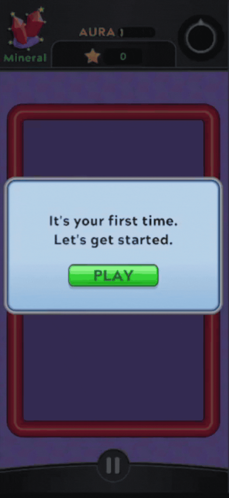
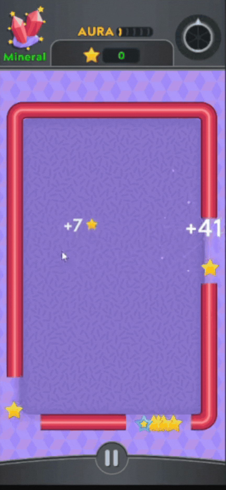

StarStarter
The brief
Anxiety is one of the most common mental-health conditions in the world, and most of the people it touches never receive treatment for it. Therapy that works exists. Access to it doesn’t.
Arcade Therapeutics, co-founded by a neuroscientist, was built to change that, to put a clinical tool directly into the hands of the people who need one. Their flagship intervention is Attention Bias Modification, a research-backed exercise where two faces appear on screen, one happy and one angry. They disappear, and the happy face leaves behind a small spaceship. The player swipes the ship to collect stars, six minutes at a time, until the brain learns to look toward warmth and away from threat.
They had the research, the clinical results, and a working prototype. What was missing was a game people actually wanted to come back to. That was the brief: keep the science untouched, and build a game around it.
The approach
Most of what I had to learn was new on two fronts. Mobile development at this scale, the IAP plumbing, the App Store and Play Store release pipelines, was new. And so was weaving therapeutics into a game without bending either one.
For texture and feel I kept coming back to retro space games and pinball machines, the same loops of points, ships, small satisfying motions, and a good soundtrack.
Over ninety percent of users in our cohort showed reduced social anxiety after playing. The average reduction was thirty-three percent.From the published clinical results
The work
Most of the codebase eventually passed through my hands. Tutorial and onboarding, power-ups, the Ship Shop, the subscription and IAP system, narrative scenes, unlockable content pages, an auth refactor, the content manager, levels, maps, animations, and on the other side of the keyboard, mockups, wireframes, Jira tickets, dev notes for the App Store and Play Store releases. A few threads ran through most of it.
There was no tutorial when I came on board. I made one that taught the point of the mechanic, why this small focus exercise was about to matter to the player. It explained the game step by step while emphasising the importance of the reinforcement and the science behind it. Daily active users rose 150% in the month after launch.



Before the shop, every session ended with the player receiving a number of stars as points but there was no loop to use said points. We added a small economy of ships, Sonic, Flash, Shield etc. each with a different power-up ability, a one-time shield, a faster ship etc. Earned points could be spent on upgrades, and a small buy-animation rewarded the spend. It gave the game a loop that hadn’t existed before: play, earn, choose, return.
The subscription flow was a complex undertaking because I realised in its implementation there would be two kinds of users on the app: enterprise users (clinics, research programs) and direct App-Store users, with different access rules, different price logic, and different renewal paths. The system needed to gate, price, and renew for both without mixing them up.
Two more layers ran on top of the core loop. A narrative arc gave the player a sense of accomplishment as they saved small creatures across the map, visual moments that paid off the time they’d put in. Underneath that, a library of short content pages about anxiety management unlocked as the player progressed, written with the clinical team. The first rewards the player for playing. The second turns the play into something they can carry into the rest of the day.


How it landed
StarStarter shipped to the App Store and Google Play and has been clinically validated across seven NIH-funded trials to reduce social anxiety in over 90% of users in our cohort. APA Labs awarded the project a Silver Digital Badge for clinical evidence, user experience, and data privacy.
Downloads at launch were up 30% over the previous version, and we kept that lift. The tutorial redesign tripled daily actives in its first month; the gameplay refactor lifted day-one retention by more than half.
What surprised me most was the small, persistent cohort of power users, people who’d played the whole game through two, three, four times over. Not the average user, but the one who’d already gotten what they came for and kept coming back anyway.
Credits
Company
Arcade Therapeutics
Tools
Unity · C#
RevenueCat · AWS Cognito
Figma · Photoshop
iOS / Google Play release pipelines
Jira · GitHub
Recognition
APA Labs Silver Digital Badge
Seven NIH-funded clinical trials
Published clinical results